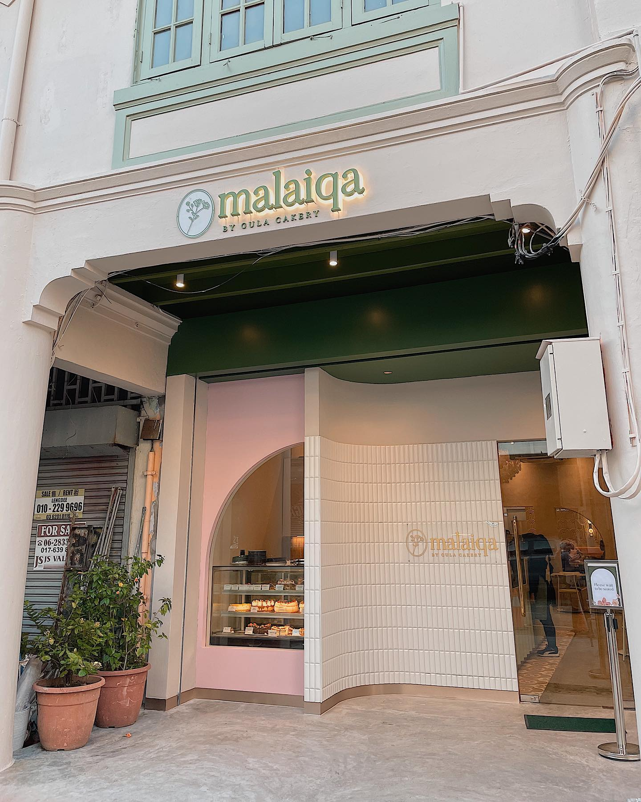
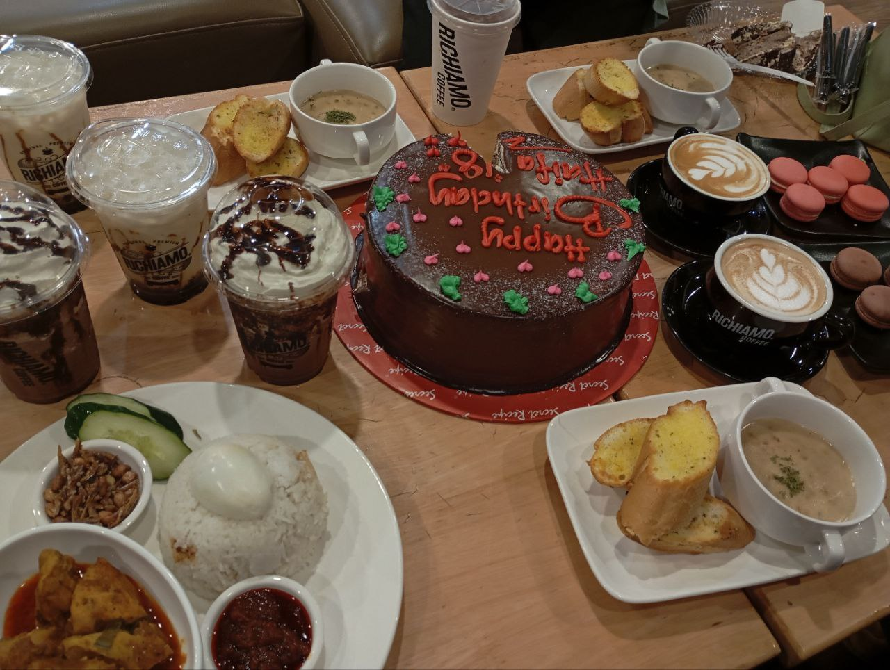
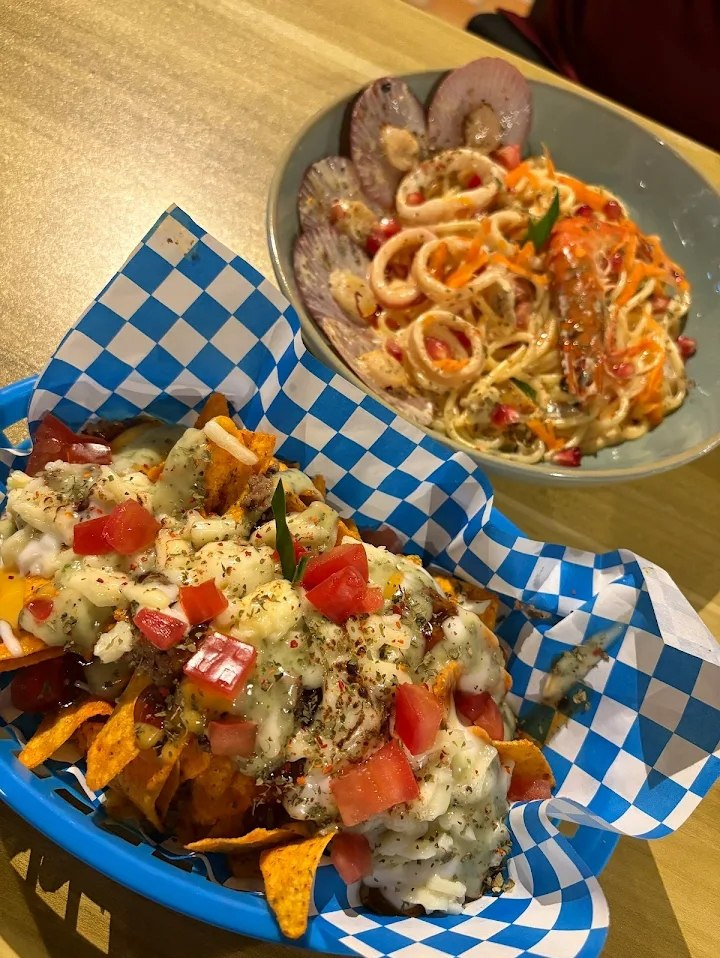
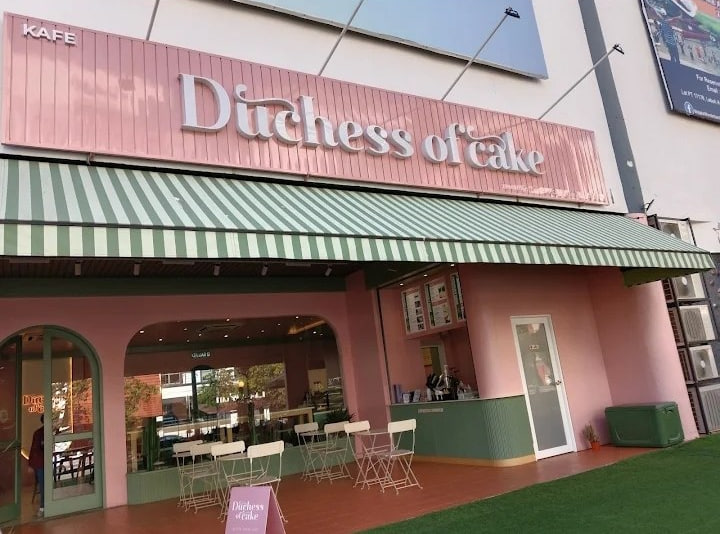
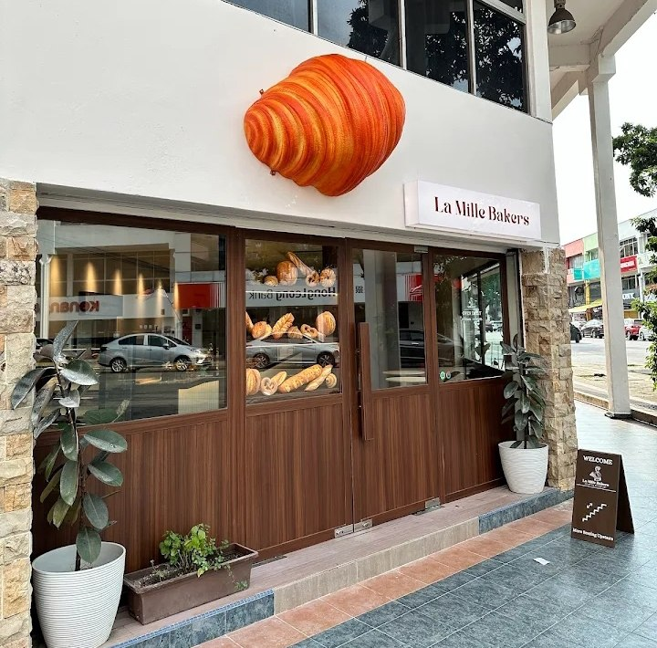

Café Hunting List

Malaiqa By Gula Cakery
📍 Melaka
Coffee | Desserts | Nibbles | Asian Dish
⭐⭐⭐
Visit SiteMoments Bites

Malaiqa's dessert

Richiamo Cafe

Lily Cafe
My Top Picks

⭐ Duchess Of Cake — Their brownies is savory

⭐ La Mille Bakers— Interior aesthetic for photograph and of course the pastry here scrumtious
💡 Café Hunting Tips
- Come early in the morning to avoid the crowd.
- Try the signature drink first before ordering others.
- Don’t forget to take photos of the café atmosphere.
- Write a short review for memories.
"For me, café hunting is not just about coffee, but also about memories with friends and the experience of exploring new places"